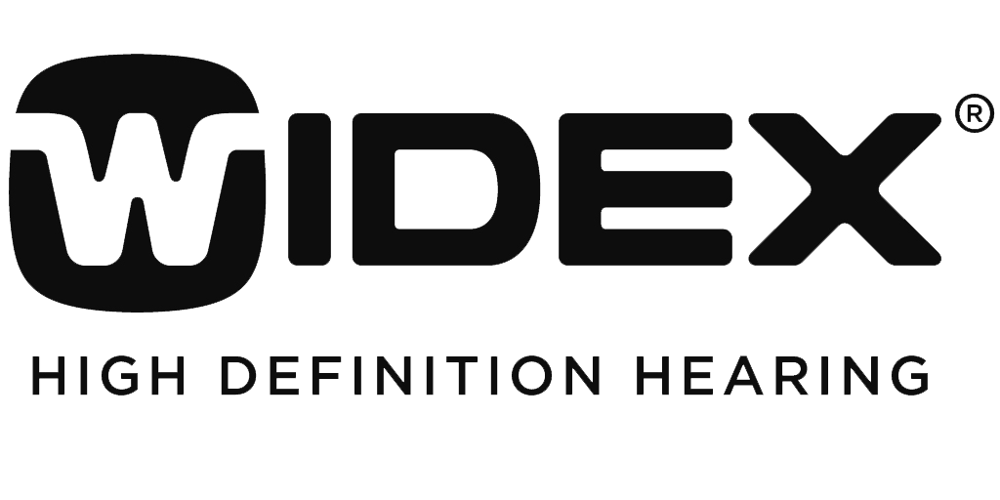

Dr. Shahrzad Cohen has guided patients across Southern California through hearing loss and tinnitus since 2001, blending personalized care, advanced technology, and the time every appointment deserves.


Marquis Who's Who 2025
Au.D., CH-TM, CBIS
Doctor of Audiology
Designated
Lenire Tinnitus Provider
Since 2001
Practicing audiologist, Sherman Oaks since 2014
Farsi, Spanish, English
Multilingual care
Hearing changes affect work, relationships, and the way you experience the world. Our care starts with listening to you, then matching the right technology and therapy to your goals.
Comprehensive diagnostic testing that goes beyond a basic screening, with results explained in plain language.
Lyric extended-wear, premium prescription devices, and real-world fitting verification with real-ear measurement.
Designated Lenire provider, plus Levo and Neuromonics therapies. A complete tinnitus program, not a single device.
Custom protection for musicians, first responders, shooters, and anyone who works in loud environments.
Follow-up appointments, fine-tuning, and counseling available remotely when an in-office visit is not needed.
A careful review of prior testing, hearing aid programming, and treatment plans, with clear next steps.



Doctor of Audiology, Certified in Tinnitus Management, Certified Brain Injury Specialist.
Dr. Cohen has built her Sherman Oaks practice around a simple idea: hearing care should feel personal, unhurried, and grounded in evidence. She blends clinical precision with warm communication so patients understand every option before they choose one.
She is a designated Lenire tinnitus provider, a 2025 Marquis Who's Who honored listee, and an active educator who lectures on tinnitus, hearing loss, and brain injury-related auditory issues.
Meet Dr. CohenWe are an out-of-network practice. That choice lets us spend the time each patient needs, fit technology rigorously, and follow through long after the device arrives. We provide super bills you can submit to your insurance for possible reimbursement.
A full conversation about your hearing history, lifestyle, work, and the moments that matter most to you, followed by clear next steps at every stage of care.
Comprehensive audiologic evaluation, tinnitus assessment when indicated, and a clear written summary you keep, tailored to how you actually live and listen.
We review every option, including doing nothing, and choose the path that fits your goals and budget, backed by decades of clinical training.
"Dr. Cohen is an amazing audiologist who not only looks at the technical side of hearing, but understands how hearing effects behavior. Her knowledge of auditory processing disorder is impressive."
Bonnie W.
"The mobile clinic came to my home and made everything simple for my mother. Dr. Cohen took her time and explained every step."
J.R., adult child of patient
"The Lenire program has been life-changing for my tinnitus. I sleep through the night for the first time in years."
Sherman Oaks patient
Schedule a consultation with Dr. Cohen. We will listen, test carefully, and walk you through every option so you can choose with confidence.
Book Your Visit